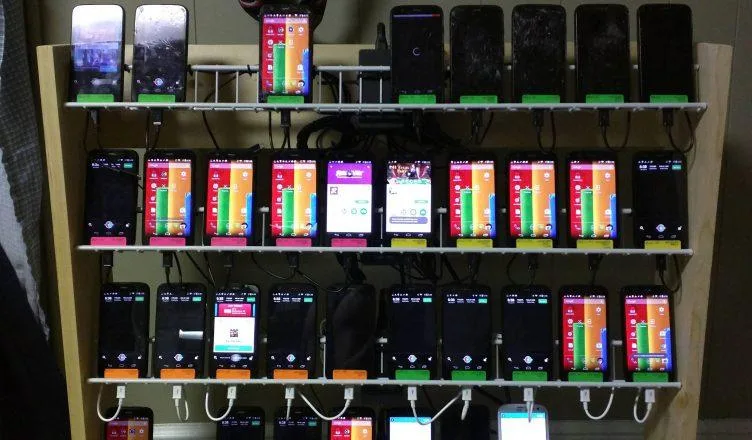

Lyhyesti
- Tietoturvayhtiö Impervan mittausten mukaan bottien osuus verkkoliikenteestä on noussut noin puoleen, ja vuoden 2024 datassa automaattinen liikenne ohitti ihmisten liikenteen.
- Puhelinfarmit käyttävät oikeita puhelimia ja SIM-kortteja, joten alustojen on vaikea erottaa niitä aidoista käyttäjistä.
- Algoritmit nostavat sisältöä, joka saa nopeasti reaktioita – ja botit osaavat tuottaa niitä tilauksesta.
- Sama infrastruktuuri palvelee kaupallista huijausta, rikollisuutta ja poliittista vaikuttamista. Ero on tavoitteessa, ei tekniikassa.
Tietoturvayhtiö Impervan vuosittain julkaistava Bad Bot Report kertoo, että bottien osuus verkkoliikenteestä on kasvanut noin puoleen. Vuoden 2024 raportissa osuus oli 49,6 prosenttia. Vuoden 2025 raportin mukaan automaattinen liikenne ohitti ensimmäistä kertaa kymmeneen vuoteen ihmisten tuottaman liikenteen ja nousi hieman yli 50 prosenttiin.
Mitä se tarkoittaa käytännössä? Kun livelähetyksessä näkyy 50 000 katsojaa, et voi tietää, kuinka moni heistä on ihminen. Kun julkaisulla on kymmeniä tuhansia tykkäyksiä, osa niistä voi olla ostettu puhelinfarmilta jostain Aasiasta tai Afrikasta. Kun luet kommentteja, joissa ihmiset ovat yksimielisiä jostain poliittisesta asiasta, osa niistä ei ole ihmisten kirjoittamia.
Tämä ei ole salaliittoteoria. Yritykset, viranomaiset ja tutkijat ovat dokumentoineet ilmiötä järjestelmällisesti jo vuosia.
Ilmiöstä tekee enemmän kuin teknisen kuriositeetin yhteys, joka kulkee arkisen bottibisneksen ja laajemman yhteiskunnallisen vaikuttamisen välillä. Sama infrastruktuuri, jolla myydään Instagram-seuraajia vaikuttajille, kelpaa myös vaalien manipulointiin. Sama tekniikka, jolla rikollisverkosto rakentaa miljoonia valetilejä huijauksia varten, on minkä tahansa riittävän motivoituneen ja resursoidun toimijan käytössä julkisen mielipideilmaston muokkaamiseen. Mittakaava ja motiivit vaihtelevat, mutta pohjarakenne on sama.
Millaisia botteja on ja miten ne toimivat
Botti on ohjelma, joka tekee automaattisesti jotain, mitä ihminen muuten tekisi. Määritelmä kattaa kaiken hyödyllisestä haitalliseen.
Osa boteista on niin sanottuja hyviä botteja: hakukoneiden indeksointirobotit, jotka käyvät läpi verkkosivuja hakutuloksia varten, palvelinten tilaa valvovat ohjelmat ja asiakaspalvelun chatbotit. Ne ovat osa internetin perusinfrastruktuuria.
Valtaosa bottiliikenteestä on kuitenkin haitallista. Impervan vuoden 2025 raportin mukaan haitallisten bottien osuus kaikesta verkkoliikenteestä oli noin 37 prosenttia ja hyödyllisten noin 14 prosenttia. Haitalliset botit jakautuvat karkeasti kolmeen ryhmään:
- Skriptibotit ovat yksinkertaisia koodinpätkiä, jotka tekevät toistuvasti yhtä asiaa. Ne esimerkiksi tuottavat klikkauksia verkkomainoksiin tai lataavat sivuja palvelimen kuormittamiseksi. Ne tunnistetaan melko helposti, koska ne toimivat liian säännönmukaisesti.
- Sosiaaliset botit jäljittelevät ihmisen somekäyttäytymistä: ne julkaisevat, kommentoivat, tykkäävät ja seuraavat tiettyjen sääntöjen mukaan. Ne on suunniteltu muistuttamaan ihmistä niin paljon, etteivät automaattiset suodattimet tunnista niitä.
- Tekoälybotit ovat vaikein ryhmä. Ne tuottavat kielimallien avulla omaa tekstiä, vastaavat kommentteihin asiayhteyteen sopivasti ja pystyvät käymään pitkiäkin keskusteluja. Pelkän tekstin perusteella niitä on käytännössä mahdoton erottaa ihmisestä.
Botteja on kaikkialla, missä ihmisiäkin
- Snapchat on pitkään kärsinyt valeprofiileista, jotka lähestyvät käyttäjiä automaattisesti.
- Verkkopeleissä, kuten MMORPG-peleissä, botit keräävät pelivaluuttaa myytäväksi oikealla rahalla ja osallistuvat pelikeskusteluihin ihmisen tavoin.
- Nettipokerin botit ovat olleet tunnettu ongelma vuosia. Ne ovat muuttaneet sen, mitä ”vastustaja” digitaalisessa ympäristössä oikeasti tarkoittaa.
- Arvostelualustat, joihin ihmiset luottavat ostopäätöksissään – Google Maps, Amazon ja sovelluskaupat – ovat alttiita järjestelmälliselle arvostelujen manipuloinnille, jonka automatisointi on halpaa ja tehokasta.
Mitä puhelinfarmit ovat ja miten ne toimivat
Kuvittele huone, jossa on lattiasta kattoon ulottuvat hyllyt täynnä älypuhelimia. Jokainen puhelin on kytketty sähköön, jokaisessa on oma SIM-kortti, ja jokainen on rekisteröity omaksi laitteekseen. Tältä näyttää puhelinfarmi.
Brittiläinen valokuvaaja Jack Latham kuvasi Hanoin puhelinfarmeja kirjaansa varten: toimistoja, joissa oli kokonaisia seiniä puhelimia, ja hiljaisia huoneita, joissa kymmenet laitteet tekivät samaan aikaan samaa asiaa – tykkäsivät, kommentoivat, seurasivat ja katsoivat.

Puhelinfarmit eroavat tavallisista ohjelmistoboteista siinä, että ne käyttävät oikeita fyysisiä laitteita ja oikeita SIM-kortteja. Se tekee niiden tunnistamisesta paljon vaikeampaa.
Somealustat tunnistavat laitteita niin sanotulla sormenjälkitekniikalla (device fingerprinting), joka perustuu puhelimen teknisiin ominaisuuksiin, kuten näytön tarkkuuteen, akun tilaan ja anturidataan. Oikealla puhelimella ja oikealla SIM-kortilla jokainen laite näyttää aidolta käyttäjältä, eikä automaattinen suodatin välttämättä huomaa eroa.
Puhelinfarmien palvelut ovat suoraviivaisia ja halpoja. Tuhat tykkäystä tai seuraajaa voi maksaa vain muutamia euroja, katselukertoja saa vielä halvemmalla, ja yksi ylläpitäjä voi hallita satojen tai jopa tuhansien puhelinten verkkoa samanaikaisesti.
Alustat poistavat valetilejä valtavia määriä. TikTok kertoi poistaneensa vuoden 2024 kolmannella vuosineljänneksellä 348 miljoonaa valetiliä, ja Meta raportoi toimenpiteistä satoja miljoonia valetilejä vastaan joka vuosineljännes. Luvut kertovat enemmän siitä, kuinka paljon valetilejä luodaan, kuin siitä, kuinka tehokkaasti niitä poistetaan. Valetilin luominen on niin nopeaa ja halpaa, ettei poistaminen pysy tahdissa.
Miten algoritmit nostavat sisältöä – ja miksi botit osaavat hyödyntää sitä
Somealustojen algoritmit toimivat samalla perusperiaatteella: ne seuraavat reaktioita ja nostavat esiin sisällön, joka saa nopeimmin eniten oikeanlaisia reaktioita. Katseluaika, tykkäykset, kommentit, jaot ja livekatsojien määrä ovat signaaleja, joiden perusteella algoritmi päättää, levitetäänkö sisältöä laajemmalle. Rakenne on suunniteltu löytämään suosittu sisältö tehokkaasti, mutta se on samalla täydellinen hyökkäyspinta keinotekoiselle manipuloinnille.
Livelähetykset
Livelähetyksissä tämä näkyy selvimmin. Kun lähetys alkaa, algoritmi seuraa, kuinka nopeasti katsojia kertyy ja kuinka aktiivisia he ovat. Jos lähetys saa ensimmäisinä minuutteina riittävän vahvan signaalin, se nousee alustan etusivulle, Explore-osioon tai suosituslistoille.
Jos lähetykseen pumpataan heti alkuun muutama tuhat bottikatsojaa, algoritmi tulkitsee sen suosituksi ja alkaa suositella sitä oikeille käyttäjille. Oikeat katsojat saapuvat, koska algoritmi nosti sisällön, ja se vahvistaa algoritmin käsitystä suosiosta entisestään. Keinotekoinen alku laukaisee aidon reaktion.
Julkaisut ja trendit
Sama mekanismi toimii tavallisissa videoissa ja julkaisuissa. Kun julkaisu saa ensimmäisten tuntien aikana paljon reaktioita, algoritmi levittää sitä vaiheittain yhä suuremmalle yleisölle. Jos reaktiot syntyvät koordinoidusta bottitoiminnasta eivätkä aidosta kiinnostuksesta, lopputulos on silti sama: yhä useampi ihminen näkee sisällön.
Trendaavat aiheet toimivat samoin. Koordinoitu bottijoukko, joka alkaa yhtä aikaa kommentoida tiettyä aihetta, voi nostaa sen trendeihin ennen kuin yksikään oikea ihminen on reagoinut.
Valearvostelut maksavat sinulle
Capital One Shoppingin tutkimusyksikön arvion mukaan valearvostelut maksavat keskivertoverkko-ostajalle noin 125 dollaria vuodessa, ja ne vaikuttavat maailmanlaajuisesti satojen miljardien dollarien verkko-ostoihin. Originality.ai-yhtiön selvityksen mukaan kiinteistövälittäjiä koskevista arvioista Zillow-palvelussa 23,7 prosenttia oli vuonna 2025 todennäköisesti tekoälyn tuottamia, kun vuonna 2019 osuus oli 3,63 prosenttia.
Kuka käyttää tätä vaikuttamiseen – ja miksi kuka tahansa voisi

1. Kaupallinen käyttö
Kaupallinen motiivi on yksinkertaisin. Seuraajamäärä on rahaa, arvostelujen määrä on myyntivaltti ja livekatsojien määrä on neuvotteluasema mainostajia vastaan. Seuraajien ja tykkäysten ostaminen rikkoo yleensä alustojen käyttöehtoja, mutta se ei monessa maassa ole sellaisenaan rikos – ja sitä tehdään joka päivä ympäri maailmaa. Valearvostelujen ostaminen ja julkaiseminen on sen sijaan kielletty muun muassa EU:n kuluttajansuojasäännöissä ja Yhdysvalloissa FTC:n säännöillä.
2. Rikollinen käyttö
Rikollinen käyttö on seuraava taso. Samoja valeidentiteettejä, joilla myydään Instagram-seuraajia, voidaan käyttää kaksivaiheisen tunnistautumisen kiertämiseen, valesijoitussivustoihin tai suoranaiseen kiristykseen. Tähän palataan SIMCARTEL-tapauksessa artikkelin lopussa.
3. Poliittinen ja yhteiskunnallinen käyttö
Poliittisesta käytöstä puhutaan julkisesti vähiten, mutta se on merkittävintä. Kun rikolliset ja kaupalliset toimijat rakentavat tätä infrastruktuuria, ne tuovat tekniikan kaikkien saataville, joilla on rahaa ja motivaatiota. Kynnys ei ole tekninen vaan taloudellinen. Riittävästi resursoitu toimija – yritys, poliittinen kampanja tai valtiollinen toimija missä tahansa maassa – voi ostaa pääsyn samaan infrastruktuuriin tai rakentaa omansa.
Ero rikollisen bottioperaation ja poliittisen vaikuttamisoperaation välillä ei ole tekniikka vaan tavoite.
Ongelman ytimen ymmärtämiseksi ei tarvitse osoittaa sormella yhtäkään valtiota tai organisaatiota. Infrastruktuuri, joka nyt pyörittää kaupallista myyntiä, on teknisesti sama, jolla voidaan muokata käsitystä siitä, mitä kansalaiset ajattelevat, mitkä teemat ovat esillä julkisessa keskustelussa ja mikä näyttää nauttivan laajaa kannatusta.
Tapaus Cambridge Analytica – kun datayhtiö kohdensi poliittisia viestejä psykologisen profiloinnin avulla
Cambridge Analytica -skandaali paljasti hieman eri asian kuin bottikampanjat, mutta samalta ilmiökentältä. Se näytti, miten yksityinen datayhtiö pystyi käyttämään somesta kerättyä dataa ihmisten psykologiseen profilointiin ja kohdentamaan poliittisia viestejä juuri oikeille ihmisille juuri oikealla tavalla.
Psykologian tutkija Aleksandr Kogan kehitti Facebook-sovelluksen nimeltä This Is Your Digital Life. Se keräsi vuonna 2014 tietoja paitsi käyttäjistään myös heidän Facebook-ystävistään – ilman ystävien suostumusta. Sovellusta käytti noin 270 000 ihmistä, mutta kerättyjen profiilien määrä nousi Facebookin arvion mukaan jopa 87 miljoonaan. Facebookin silloiset säännöt antoivat kolmansien osapuolten sovelluksille pääsyn käyttäjien ystäväverkostoihin.
Kogan luovutti datan Cambridge Analyticalle, joka käytti sitä niin sanotun OCEAN-mallin mukaiseen profilointiin. Mallin viisi persoonallisuuspiirrettä ovat avoimuus, tunnollisuus, ulospäinsuuntautuneisuus, sovinnollisuus ja neuroottisuus. Yhtiö väitti pystyvänsä ennustamaan niiden perusteella ihmisten poliittisia mieltymyksiä hyvin tarkasti.
Yhtiö pystyi tunnistamaan ratkaisevien osavaltioiden äänestäjät, jotka eivät olleet vahvasti sitoutuneita mutta joihin voisi vedota tietyllä tunneviestillä, ja kohdentamaan heille juuri sen viestin, joka heidän profiilinsa perusteella osuisi parhaiten. Kyse ei ollut bottiliikenteestä teknisessä mielessä, mutta kyse oli massadatan käyttämisestä ihmisten mielipiteisiin vaikuttamiseen tavalla, jota kohteet eivät tienneet tapahtuvan.
Paljastukset johtivat siihen, että Facebookin toimitusjohtaja Mark Zuckerberg joutui kuultavaksi Yhdysvaltain kongressiin vuonna 2018. Myöhemmin Yhdysvaltain kilpailu- ja kuluttajavirasto FTC määräsi Facebookille viiden miljardin dollarin sakon tietosuojarikkomuksista. Cambridge Analytica lopetti toimintansa, mutta datan keruu, profilointitekniikat ja kohdennetun vaikuttamisen bisnes eivät kadonneet mihinkään.
Tapaus SIMCARTEL – rikollisverkosto ja 49 miljoonaa valetiliä
Lokakuun 10. päivänä 2025 Latvian poliisi teki ratsian SIMCARTEL-nimisessä operaatiossa yhdessä Europolin, Eurojustin sekä Suomen, Viron ja Itävallan viranomaisten kanssa. Seitsemän ihmistä pidätettiin, heistä viisi Latvian kansalaisia.
Viranomaiset takavarikoivat:
- 1 200 SIM-box-laitetta, joissa oli 40 000 aktiivista SIM-korttia
- viisi palvelinta ja satoja tuhansia käyttämättömiä SIM-kortteja
- neljä luksusautoa
- noin 431 000 euroa pankkitileiltä ja noin 516 000 dollarin arvosta kryptovaluuttaa.
Verkoston epäillään luoneen 49 miljoonaa valetiliä yli 80 maan puhelinnumeroilla.
Kyse oli niin sanotusta crime-as-a-service-mallista, jossa verkosto vuokrasi puhelinnumeroita muille rikollisille. Asiakas maksoi numerosta, sai kertakäyttöisen tunnistautumiskoodin ja loi sen avulla valetilin kryptopörssiin, verkkopankkiin tai somealustalle. Tiliä käytettiin petoksiin tai kiristykseen.
Samaa infrastruktuuria käytettiin valesijoitussivustoihin, väärennettyihin verkkokauppoihin, viranomaisiksi tekeytymiseen ja ”hei äiti” -tyyppisiin huijauksiin, joissa esiinnytään uhrin läheisenä. Viranomaisten vahvistamat vahingot ovat noin 4,5 miljoonaa euroa Itävallassa ja noin 420 000 euroa Latviassa. Koska verkoston palveluja käytettiin kymmenissä maissa, todelliset vahingot ovat todennäköisesti moninkertaiset.
SIMCARTEL on konkreettinen esimerkki siitä, mihin tällainen infrastruktuuri pystyy. Pieni ryhmä ihmisiä ja 49 miljoonaa identiteettiä. Jos rikollisverkosto pystyy tähän, mieti, mikä on mahdollista, kun resurssit, motivaatio ja organisointikyky ovat kertaluokkaa suuremmat.
Mitä tästä pitäisi ajatella
Rehellinen johtopäätös ei ole, että internet on kuollut tai että kaikki verkossa näkemäsi on valetta. Johtopäätös on, että internet on muuttunut paikaksi, jossa:
- näkyvä yksimielisyys ei enää todista todellista yksimielisyyttä
- suosittu ei automaattisesti tarkoita aidosti suosittua
- sama tekninen infrastruktuuri, jolla myydään viisi tähteä verkkokaupan tuotteelle, voi muokata käsitystäsi siitä, mitä muut ihmiset ajattelevat.
Terve epäluulo sitä kohtaan, mikä näyttää suositulta tai yleiseltä mielipiteeltä, ei ole kyynisyyttä. Se on ainoa järkevä tapa liikkua verkossa, jossa noin puolet liikenteestä ei tule ihmisiltä.